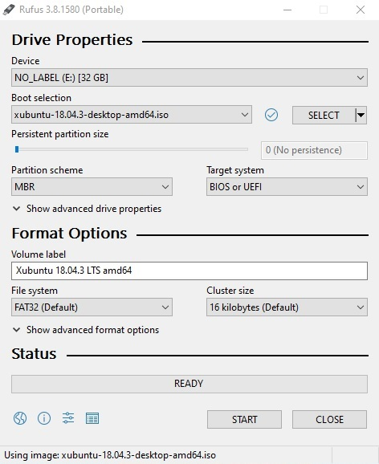
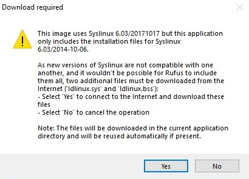
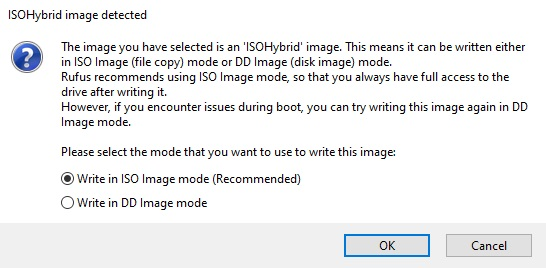
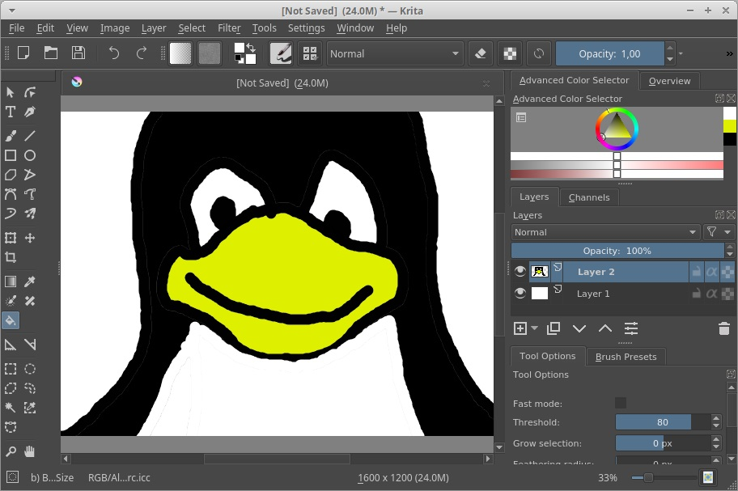

Linux livetikun luonti ja testaus
28.01.-10, Kristian KoponenTehtävänanto
Linux-palvelimet h1
- Tee oma Linux-livetikku. Kokeile sitä jossain muussa kuin koulun koneessa.
- Listaa testaamasi koneen rauta (‘sudo lshw -short -sanitize’).
- Asenna kolme itsellesi uutta ohjelmaa. Kokeile kutakin ohjelmaa sen pääasiallisessa käyttötarkoituksessa.
- Mitä lisenssiä kukin näistä ohjelmista käyttää? Selitä lyhyesti, mitä oikeuksia ja velvolisuuksia tuosta lisenssistä seuraa.
- Listaa käyttämäsi ohjelmat (esim. MS Word), kunkin ohjelman käyttötarkoitus (esim. Tekstinkäsittely) ja vastaava vapaa Linux-ohjelma (esim. LibreOffice Writer). Jos johonkin tarkoitukseen ei löydy vapaata Linux-ohjelmaa, listaa sekin.
Käytetyt laitteet
Lenovo ThinkPad X220
| Prosessori: | Intel(R) Core(TM) i5-2540M @ 2.60Ghz |
|---|---|
| Keskusmuisti: | 4GiB 1333Mhz DDR3 |
| Näytönohjain: | Intel HD Graphics 3000 |
| Käyttöjärjestelmä: | Windows 10 64-bit |
SanDisk Ultra USB 3.0 32 GB
Livetikun luominen ja testaus
17:14
Käytän tikun luomiseen Windows 10 käyttöjärjestelmää, joten latasin Rufus 3.8 live USB-tikun luontiohjelman. Latasin myös xubuntu 18.04.3 amd64 ISO-tiedoston torrentilla. Aloin sitten luomaan livetikkua.
{kind=link}
Laitoin kuvan mukaiset asetukset ja painoin ”Start” -painiketta.
{kind=link}
Vastaan tuli kuitenkin ilmoitus tarvittavasta latauksesta. Painoin tässä kohtaa ”Yes”.
{kind=link}
Rufus muistutti mitä olen tekemässä ja kysyi haluanko luoda levykuvan ISO vai DD -moodilla. Jatkoin suositellulla ISO:lla.
Live-tikun luonti tapahtui muutamassa minuutissa ilman valituksia.
17:30
Boottasin läppärin live-tikulta. Xubuntu käynnistyi normaalisti. Ruutuun avautui Asennus-ikkuna, jossa kysyttiin käyttökieltä ja annettiin vaihtoehto Xubuntun kokeiluun tai Asentamiseen. Valitsin kieleksi Suomi ja painoin ”Kokeile Xubuntua”.
17:34
Live-tikun luonti onnistui moitteettomasti. Lyhyt testaus osoitti että näppäimistö, hiiri, wi-fi, netin selaus toimi. Terminaali-komennolla ”sudo lshw -short -sanitize” sain koneen speksit näkyviin.
Ohjelmien asennus
18:16
Päivitin ja asensin kolme ohjelmaa terminaalin avulla mpv mediantoisto-ohjelman, Krita kuvankäsittelyohjelman sekä Bluefish tekstinkäsittelyohjelman.
- sudo apt-get update
- sudo apt-get install mpv
- sudo apt-get install krita
- sudo apt-get install bluefish
18:29
Kaikki asentui ongelmitta ja testasin ohjelmia. mpv pyöritti netistä lataamani mp4-tiedoston, Kritalla sain piirrettyä pingviinin (kts. kuva) ja Bluefishillä sain kirjoitettua Hello World html-sivun. Kaikki siis toimi peruskäytössä kuten piti.
{kind=link}
Pingviini-piirros jäljentelee "Tux" Linux-maskottia.
Asennettujen ohjelmien lisenssit
- mpv käyttää pääosin GPL v2+ lisenssiä, mutta osa ohjelmasta käyttää LGPL v2.1 lisenssiä.
- Krita käyttää GPL3 v3 lisenssiä
- Bluefish käyttää GPL lisenssiä
GNU General Public License v2 / GNU General Public License v3
Sallii ohjelmiston ja sen lähdekoodin kopioimisen, jakamisen, muuntamisen ja kaupallisen käytön. Täytyy ilmoittaa muutokset sekä lisensoida johdettu ohjelma ja koodi GPL lisenssin alla.
GNU Lesser General Public License v2.1
Sallii ohjelmiston ja sen lähdekoodin kopioimisen, jakamisen, muuntamisen ja kaupallisen käytön. Täytyy ilmoittaa muutokset, se että käyttää LGPL-lisensoitua koodia ja lisensoida kaikki omat muutokset LGPLv2.1 lisenssin alla. Lähdekoodi on tehtävä julkiseksi.
Käyttämiäni ohjelmia
Sekä niiden käyttötarkoitusta vastaavia vapaita Linux ohjelmia
MS Office ohjelmille (Word tekstinkäsittelyohjelma, Excel taulukkolaskentaohjelma, Powerpoint esitysgrafiikkaohjelma) löytyy Linuxille vastaavat LibreOffice ohjelmista (Writer, Calc, Impress).
Photoshop kuvankäsittelyohjelmalle löytyy useita vaihtoehtoja kuten GIMP, InkScape ja Krita. Joidenkin käyttötarkoitus on rajallisempi, mutta niitä voidaan käyttää yhdessä saamaan sama lopputulos.
Notepad++, sekä Brackets (tämä löytyy Linuxille) tekstinkäsittelyohjelmat ohjelmointiin ja web-developmentiin voidaan korvata jo aiemmin testaamallani Bluefishillä.
CCleaner levynpuhdistusohjelma on Linuxilla vähemmän välttämätön sillä Linuxilla ei ole rekisteriä ja väliaikaistiedostot puhdistuvat automaattisesti. Pakettejen ja selainten tallentamien tietojen puhdistamiseen voi käyttää terminaalikomentoja, mutta mikäli tähän halutaan kuitenkin vaihtoehtoinen ohjelma voidaan käyttää Stacer, BleachBit tai Sweeper ohjelmia.
Muita ohjelmia kuten VLC Player mediantoisto-ohjelma, Spotify musiikin suoratoisto-ohjelma, Steam videopelien jakelualusta, Blender 3D-mallinnusohjelma, Unreal Engine -pelimoottori, Eclipse ohjelmointiympäristö ja Slack pikaviestintäsovellus voi käyttää Linuxilla. Näistä Unreal Engine, Spotify ja Steam eivät ole vapaita ja niille on vaikea löytää käyttötarkoituksen vuoksi vertaista vapaista ohjelmista. VLC:n voin halutessani korvata aiemmin testaamallani mpv:llä.
Lähteet
http://terokarvinen.com/2006/raportin-kirjoittaminen-4
http://terokarvinen.com/2020/aikataulu-linux-palvelimet-ict4tn021-3010-torstai-aamu-alkukevat-2020-5-op#h1
https://rufus.ie/
https://xubuntu.org/
https://github.com/mpv-player/mpv
https://github.com/KDE/krita/blob/master/COPYING
http://bluefish.openoffice.nl/index.html
https://tldrlegal.com/license/gnu-general-public-license-v2
https://tldrlegal.com/license/gnu-general-public-license-v3-(gpl-3)
https://tldrlegal.com/license/gnu-lesser-general-public-license-v2.1-(lgpl-2.1)
https://itsfoss.com/ccleaner-alternatives-ubuntu-linux/